うるがいの話 ある日
最新: ウグイスが鳴いていた所【うるがいの話 ある日】とは 一日だけのプログです
『うるがいの話』の最新一日だけのプログで、通信料が少なく経済的だ。カニの画像をクリックすると全ての日付が載る『うるがいの話』サイトを表示します
|
|
【うるがいの話】 うるがい(ｳﾙｶﾞｲ urugai)とは、『もずくがに』の名前でとても大きくなります。 |
|---|---|
|
|
【カミマヤーの話】 猫のことを方言でマヤーといいます。カミマヤー（kamimayaa）とは、神の猫のことです。 |
|
【たながぁの音楽】 たながぁ（ﾀﾅｶﾞｰ tanagaa）とは手長えびのことで、何種類かあり大きいのは車 エビぐらいになります。 |

|
【ぶながぁの話】 ぶながぁ(ﾌﾞﾅｶﾞｰ bunagaa)とは、赤い髪の毛、赤い身体、そして身長は１ｍ２０ｃｍ ぐらい、川の蟹を食べているの目撃された。場所は沖縄県国頭郡大宜味村のと ある村僕の隣近所に住んでいる爺さんから、聞いた話です。 |
|
|
【ギーマの話】 ギーマ(giima)とは、山原の里山に咲くスズランに似た、 花を付けます。実は食べられます、 気が付くと口の周りが紫になっています。 |
2024年05月02日 (木）ウグイスが鳴いていた所
15:16
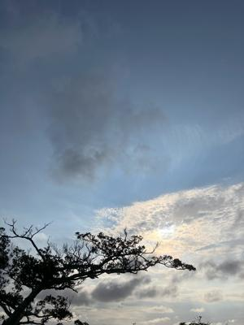
２０２２年３月１２日
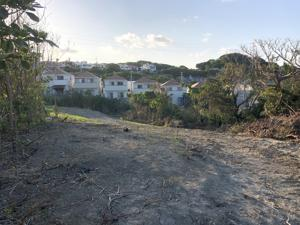 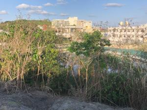 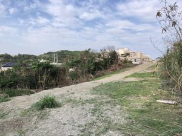
２０２２年１１月０４日～２０２２年１２月２７日
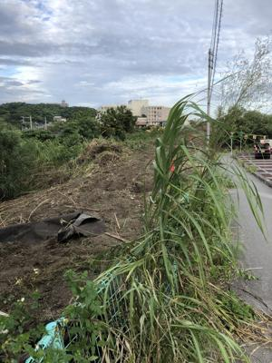

２０２３年１月１４日～２０２３年６月２９日
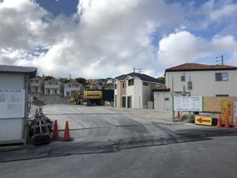 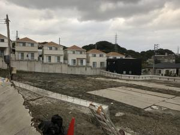 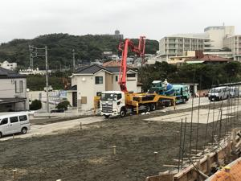 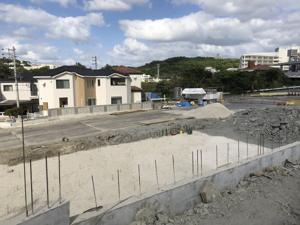 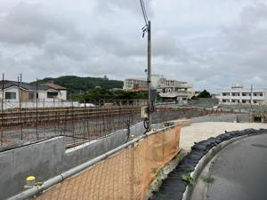

２０２４年１月７日
２０２４年４月２８日
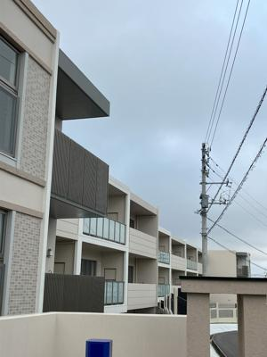
ジョギングしていると時々、ウグイスの鳴き声が聞こえた。元は、サトウキ
ビをしていたのだろうか、農地と思われると荒れ地にブルトーザが入った。
２年前の３月１２日畑を潰し、地面をならし始めたころから４月２８日に入
居者を目撃したマンションの姿である。
那覇市のサトウキビ畑は、マンションへ変わり、大宜味村の里山だったミカ
ン畑はジャングルに変わっていくのである。
１４時４６分 ビットコインの総資産 ￥２５、９９７（↓１、１０７！）